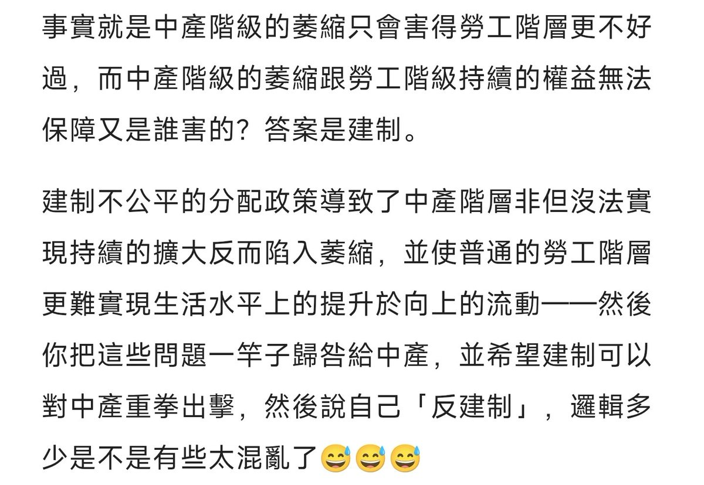

𝐀𝐬𝐡𝐥𝐞𝐲 𝐁𝐥𝐨𝐜𝐤🍥🌹🇹🇼🏳️⚧️
@bolckAshley
有點搞笑，「中產階層的跌落會分擔底層壓力」是什麼究極幻想，但凡真對現實經濟有點了解都講不出這種邏輯混亂的話來——今天跟胡溫比起來打工人的日子難道是更好過了嗎？是沒有996了還是沒有血汗工廠了？😅

齐心
@qixin_official
至于我为什么要在包子和糊瘟之间选包子，在川普和白左体面人之间选川普呢，原因我也说了很多遍了，“闯王不来你吃我，闯王来了吃你我”。我的地位并没有变化，反倒是被分摊了压力日子过的略微好了点。这句话我应该反问你：既然不是我们底层老百姓害得你阶级跌落，你凭什么要求我们同情你，为你冲锋？